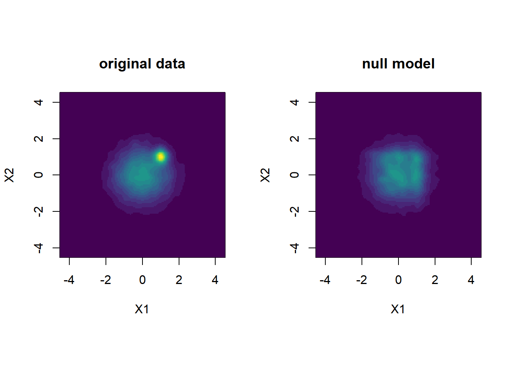
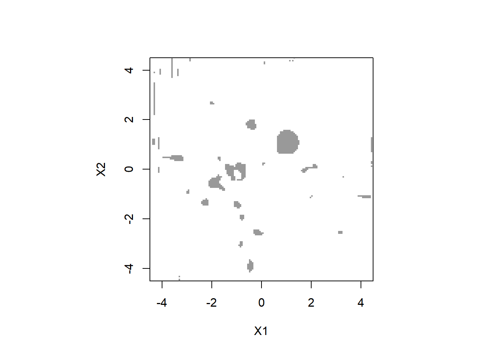
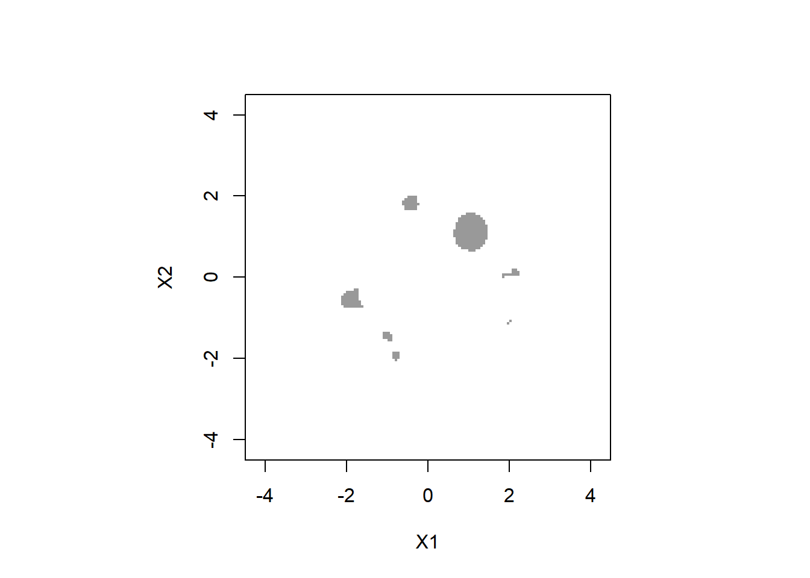

カーネル密度推定
ここでは，Rのksパッケージを使ったカーネル密度推定を行います。 カーネル密度推定は，データから確率密度関数を推定するノンパラメトリックな手法の一つです。カーネル密度推定の原理については， Wikipediaの記事の「直観的説明」がわかりやすいです。
準備
本ページで使用するパッケージがインストールされていない場合は，以下のコマンドをコンソールに入力してインスト―ルしてください。
install.packages("ks")
install.packages("mvtnorm")必要なパッケージを読み込みます。
library(ks)
library(mvtnorm)データの生成
ここでは1000人は2次元の標準正規分布 (平均は(0,0), 分散・共分散行列は単位行列) に従い， 100人は平均は(1,1)， 分散・共分散行列は対角成分が0.05 (分散が小さい)，非対角成分は0の正規分布に従うとします。 座標(1,1)付近の密度が特に高くなっているというデータになります。
# 乱数のシードを決定
set.seed(1)
# 多数派の集団
dat1 <- rmvnorm(n = 10000,
mean = c(0,0),
sigma = diag(2) )
# 高密度なクラスターをなす集団
dat2 <- rmvnorm(n = 1000,
mean = c(1.0,1.0),
sigma = diag(2)*0.05 )
# 連結してデータフレームに格納
df_data <- data.frame(rbind(dat1,dat2))今後，プロットや密度関数推定のために， 扱う変数の範囲を指定しておきます。
そのため，以下で実際のデータの最大値，最小値を求めます。
apply(df_data,2,min)## X1 X2
## -3.385580 -4.302781apply(df_data,2,max)## X1 X2
## 3.810277 3.727961全体のサンプルが収まるように，いずれの変数も-4.5から4.5の範囲にします。
xmin <- c(-4.5, -4.5) # (X1の最小値，X2の最小値)
xmax <- c(4.5, 4.5) # (X1の最大値，X2の最大値) 生成データの確認
以下でデータの散布図をプロットします。
par(pty = "s")
# 高密度なサンプルは赤色にしてプロット
plot(dat1[,1],dat1[,2],
pch = ".", cex = 2, xlab = "X1", ylab = "X2",
xlim = c(xmin[1],xmax[1]),
ylim = c(xmin[2],xmax[2]))
points(dat2[,1],dat2[,2],
pch=".",cex = 2, col = "red")
# 色分けせずプロット
plot(df_data$X1,df_data$X2,
pch = ".", cex = 2, xlab = "X1", ylab = "X2",
xlim = c(xmin[1],xmax[1]),
ylim = c(xmin[2],xmax[2]))
色分けをしない散布図からは，(X1,X2) = (1,1)に高密度な領域があるのがわかりにくいと思います。 以下で見ていくように，密度を推定することで，それがわかりやすくなります。
カーネル密度推定の実行
上で生成したデータに対しカーネル密度推定を行います。
# 最適なカーネルの幅 (bandwidth) を選択する
Hpi <- ks::Hpi.diag(x = df_data)
# カーネル密度推定
kd <- ks::kde(x = df_data, H = Hpi,
xmin = xmin, xmax = xmax)
# 後のために，評価点の座標を記録しておく
eval.points.x <- kd$eval.points[[1]]
eval.points.y <- kd$eval.points[[2]]
# 密度の推定結果を持ち替えておく
density.original <- kd$estimate以下で推定した密度のカラーマップを作ります。
par(pty = "s")
image(density.original,
x = eval.points.x,
y = eval.points.y,
xlab = "X1", ylab = "X2",
col = viridis::viridis(20))(X1, X2) = (1, 1) の周辺に密度の高い領域が存在することがはっきりしました。
ヌルモデルの構築
上で見た高密度だと思われる領域が有意に高密度であるかどうか データから判定する方法を考えます。 ここではGerlachらが用いた，ヌルモデルを構築し，もとの密度と比較する方法を紹介します。
まず，変数間の関係をランダマイズ (シャッフル) し， 周辺分布を保ちながら，変数間の依存関係を崩したサンプルを作ります。
x_shuffeled <- apply(df_data, MARGIN = 2, sample)上の1行では，関数applyで各列に関数sampleを適用しています。sampleは与えられた配列の順番をシャッフルする関数です。
(参考) これをfor文で書くと，例えば以下のようになります。
x_shuffeled <- matrix(0, n.sample,2)
for (idx in 1:2)
x_shuffeled[,idx] <- sample(df_data[,idx])(19’/09/10 追記: ここでは全ての列をシャッフルしていますが，変数間の関係を崩せばいいだけなので， 1つの列はシャッフルする必要はありません。)
以下でシャッフルしたデータの散布図を見てみます。
par(pty = "s")
plot(x_shuffeled[,1], x_shuffeled[,2],
pch = ".", cex = 2,
xlab = "X1", ylab = "X2",
xlim = c(xmin[1],xmax[1]),
ylim = c(xmin[2],xmax[2]))このデータから上で紹介したカーネル密度推定を行います。
# (bandwidth: Hpiはオリジナルなデータで選択したものを使う)
kd_null <- ks::kde(x = x_shuffeled, H = Hpi,
xmin = xmin, xmax = xmax)
density.shuffle <- kd_null$estimate推定した密度のカラーマップを作り，オリジナルなデータのものと比較してみます。
par(mfrow=c(1,2), pty = "s")
# 密度の最大値を求める
zmax <- max(density.original, density.shuffle)
image(density.original,
x = eval.points.x,
y = eval.points.y,
xlab = "X1", ylab = "X2",
main = "original data", zlim = c(0,zmax),
col = viridis::viridis(20))
image(density.shuffle,
x = eval.points.x,
y = eval.points.y,
xlab = "X1", ylab = "X2",
main = "null model", zlim = c(0,zmax),
col = viridis::viridis(20))
左のオリジナルなデータでは，座標(1,1)周辺の高密度領域がヌルモデルと比べて密度が高くなっている様子がわかります。
ヌルモデルとの比較によるクラスターの評価
次に，二つの密度の差分をってみます。
# 密度の差分をとる
# ただし，ヌルモデルの方が密度が高い領域はゼロに
diff <- pmax(density.original - density.shuffle, 0)
par(pty = "s")
image(diff,
x = eval.points.x,
y = eval.points.y,
xlab = "X1", ylab = "X2",
main = "Difference", zlim = c(0,max(diff)),
col = viridis::viridis(20))
この差が有意なものかどうかGerlachらにならい検定してみます。 検定では，ヌルモデルの密度はシャッフルの仕方で変わるので，各座標において，ヌルモデルの密度の分布を求め，その分布の中の棄却域に入れば有意であるとします。Gerlachらは有意水準を0.01としています。
n.shuffle <- 1000 # シャッフルする回数
# ヌルモデルの密度を超えた回数を格納する配列
count_exceedance <- array(0, dim(density.original))
# ヌルモデルの密度の和を格納する配列
density.sum <- array(0, dim(density.original))
for (idxs in 1:n.shuffle) {
# シャッフル
x_shuffeled <- apply(df_data, MARGIN = 2, sample)
# カーネル密度推定の実行
k.shuffle <- ks::kde(x = x_shuffeled, H = Hpi,
xmin = xmin, xmax = xmax)
# ヌルモデルより密度が高い領域は1を足す
count_exceedance <- count_exceedance +
as.numeric(density.original < k.shuffle$estimate)
if (idxs == 1)
density.sum <- k.shuffle$estimate
else
density.sum <- density.sum + k.shuffle$estimate
}
# ヌルモデルの密度の平均を計算
d.shuffle.mean <- density.sum / n.shuffle
# p値を，ヌルモデルの密度を超えた回数の割合として計算
p.value <- count_exceedance / n.shuffle1%水準で有意になっている領域をグレーで塗りつぶします。
par(pty="s")
image(eval.points.x,
eval.points.y,
z = (p.value < 0.01), # 有意な領域はTRUE (1に変換される) に
col = c( rgb(0, 0, 0, alpha = 0.0),
rgb(0.2,0.2, 0.2, alpha = 0.5)),
xlim = c(xmin[1],xmax[1]),
ylim = c(xmin[2],xmax[2]),
zlim = c(0,1),
xlab = "X1", ylab = "X2"
)
(1,1)周辺の領域は有意であると判定されます。 一方で，それ以外にも有意になっている“ごみクラスター”もみられます。
上のごみクラスターには，実際のサンプルがほとんどない位置に 存在するものも見られます。 データの密度が低いところは，推定誤差などの影響も受けやすくなり， あまり意味のある結果とは言えません。そこで，データの密度が，最高値の5%に満たないところは除外してみます (これはGerlachらは行っていない手続きです)。
d.threshold <- max(density.original) * 0.05
par(pty="s")
image(eval.points.x,
eval.points.y,
z = (p.value < 0.01 & density.original > d.threshold),
# 有意な領域，かつd.thresholdより密度が高い領域はTRUEに
col = c( rgb(0, 0, 0, alpha = 0.0),
rgb(0.2,0.2, 0.2, alpha = 0.5)),
xlim = c(xmin[1],xmax[1]),
ylim = c(xmin[2],xmax[2]),
zlim = c(0,1),
xlab = "X1", ylab = "X2"
)少しきれいになりました。
さらに，Gerlachらはオリジナルなデータの密度とヌルモデルの密度の平均値の比を’enrichment’と定義し， クラスターの中心が\(p < 0.01\) という基準に加え，enrichment \(>\) 1.25になるクラスターをmeaningfulな クラスターとしています。このenrichmentに関する制約も加えてみます。
par(pty="s")
image(eval.points.x,
eval.points.y,
z = (p.value < 0.01 & density.original > d.threshold &
density.original / d.shuffle.mean > 1.25), # enrichmentが1.25を超えるという条件を追加
col = c( rgb(0, 0, 0, alpha=0.0),
rgb(0.2,0.2, 0.2, alpha=0.5)),
xlim = c(xmin[1],xmax[1]),
ylim = c(xmin[2],xmax[2]),
zlim = c(0,1),
xlab = "X1", ylab = "X2"
)
また少しきれいにはなりましたが，まだ“ごみクラスター”は残っています。 しかし，Gerlachらは，このように全領域にわたる評価点を網羅的に評価するのではなく， まず混合正規分布のフィットを行い，そのピークの座標だけで上のような計算を行っています。 ですので，ごみクラスターの存在はそこまで問題にはならないかもしれません。
また，Gerlachらが扱ったデータのようにデータが5次元にもなると，このように網羅的な密度の評価はいずれにしても計算負荷の問題から困難になります。
注意点
上記のヌルモデルとの密度比較による分析手法は， 「同じ周辺分布を持つ独立な分布と 密度が有意に異なる」領域を判定するものです。 単に「相関がある」といだけも独立ではなくなるので， 相関があれば，特別な高密度領域が なくても多くの領域が有意と判定されてしまいます。 (例えば以下のようなスクリプトで相関のある2次元正規分布から人工データを生成して同様の解析を試してみましょう。)
# 相関のあるデータ
sigma <- matrix(c(1,0.4,0.4,1), nrow = 2, ncol = 2)
df_data <- data.frame(rmvnorm(n = 10000,
mean = c(0,0),
sigma = sigma))したがって，基本的には扱うデータの (2次の) 相関はゼロにしておかないと， この分析をする意義は損なわれると思います。 Gerlachらは因子スコアに対してこの分析をしているのですが， 事前の因子分析で直交回転をすることで， 因子スコア間の相関はゼロに近い値になるようにしています。 (因子スコアの推定値については完全に無相関になるような推定法が用いられているわけではありませんが，そこまで影響はないと思います)。
では，単純な相関はない状況で，独立性を仮定したヌルモデルより 密度が高い，ということはどういうことを意味しているのでしょうか。 これは適用する問題の構造や実際の分布の形状に応じて考えなければならないことだと思います。